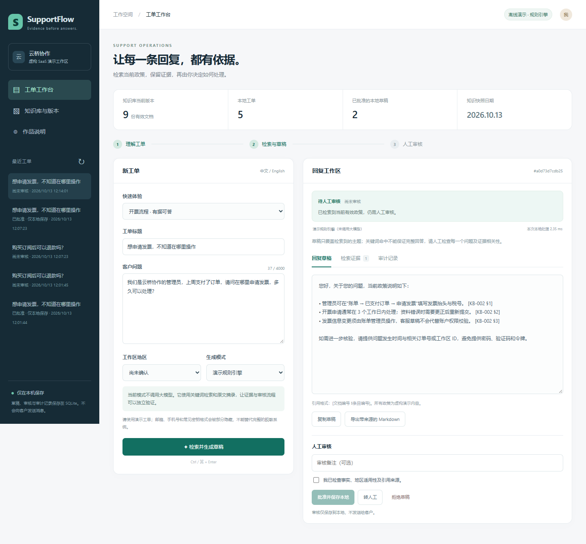

CASE 01知识工作流 / 人工审核
SupportFlow客服知识与工单助手
给回复草稿，
一条可审阅的证据链。
将知识查询、引用草稿与人工确认连接起来。信息不足和地区政策冲突有明确出口，审核决定与修改留在本地记录中。
31 条合成回归＋32 项工程测试通过 · 离线验证
查看项目源码
先确认知识能回答什么。
关键词检索当前有效知识，保留来源编号与政策地区。知识未覆盖或退款地区不明确时，停止直接答复并提示补充信息。
产品取舍：完整回答之前，先避免把不适用的政策合并。